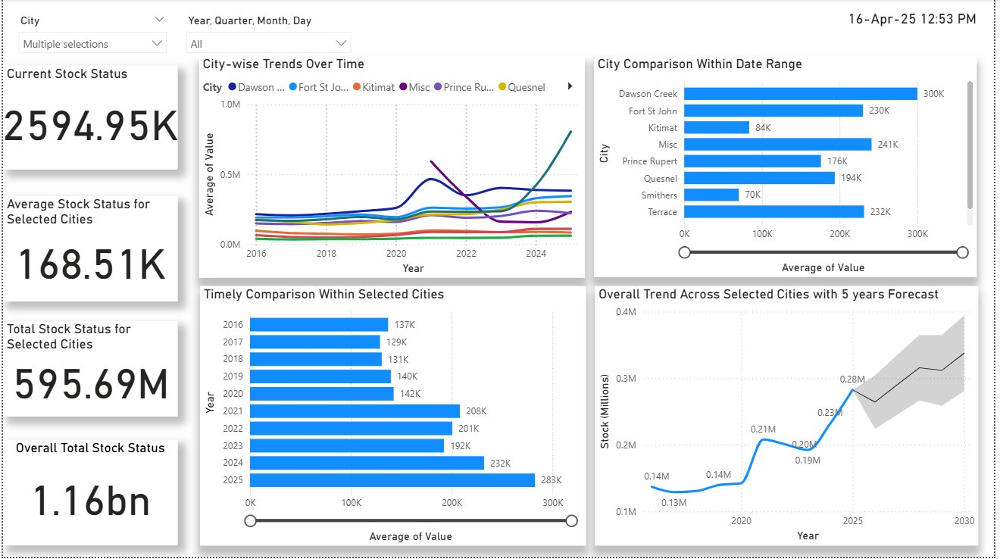
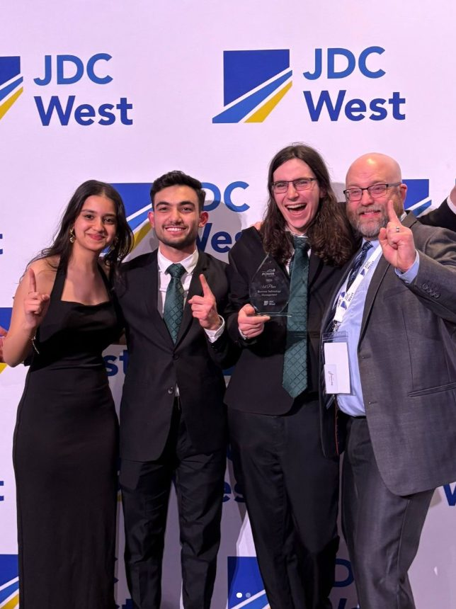

Zohaib Rahim
Building Better Systems.
Final-year Computer Science co-op student creating practical technology for real operational needs.
reporting
decision-making
supported
Project Portfolio
Explore practical work across analytics, business systems, automation, and software engineering.
Dashboards, data modelling, machine learning, forecasting, and decision-support systems.

PHSA Stock Inventory Dashboard
Regional inventory analytics and forecasting.
Canadian Crime Statistics Dashboard
Canadian crime trends and forecasting.
Credit Card Fraud Detection
Fraud models on imbalanced data.
Stock Market Portfolio Dashboard
Portfolio performance and risk analytics.
LLM Jailbreak Detection
DistilBERT layer-wise probes and representation analysis.
Power BI Resume Dashboard
Multi-page dashboard using my own résumé as the dataset.
Professional Experience
Practical experience across analytics, digital transformation, business systems, and technical delivery.
Founder
ActiveBuilt and deployed three live client applications using research, interface design, development, testing, GitHub, and Vercel workflows.
ECD Programme Innovation & Digital Solutions Intern
Delivered digital assessment and approval infrastructure supporting more than 20 schools across 10 countries and replacing paper-based data collection.
Project Manager 1 | Co-op
Built analytics and operational systems that supported 30% faster reporting, 25% faster decision-making, 40% fewer scheduling errors, and the revision of 26 SOPs.
About Me
I’m Zohaib Rahim, a final-year Computer Science co-op student working across data analytics, digital transformation, business systems, and full-stack software engineering. I build practical solutions that improve processes, support decisions, and create measurable results.
EDUCATION
UNBC
BSc Computer Science
LOCATION
British Columbia
Canada
AVAILABILITY
Fall 2026 Co-op
Summer 2027
Self-Directed by Design
Self-directed learner who turns unfamiliar technologies into working, tested, and documented solutions.
Business Technology Management – JDC West 2026
Developed and presented a post-acquisition IT modernization strategy combining system architecture, budget constraints, implementation planning, and employee change management.

emoji_eventsReady to solve the next challenge?
I’m actively interviewing for Fall 2026 co-op placements and Summer 2027 early-career roles across data analytics, business systems, digital transformation, and software engineering.